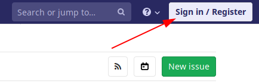
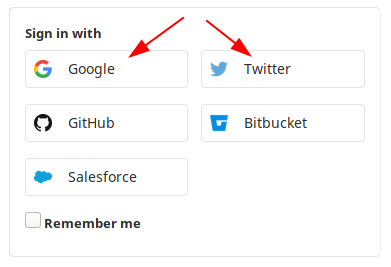
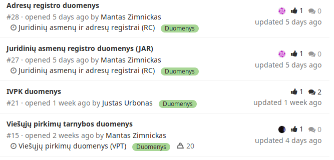
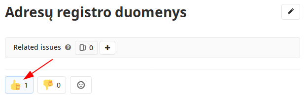
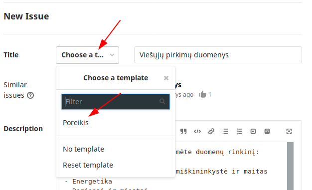
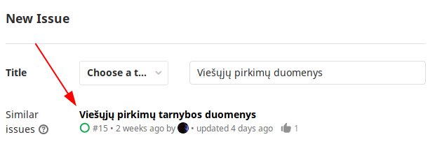
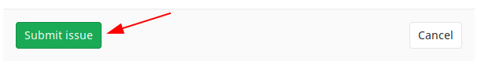

Duomenų atvėrimas įgauna pagreitį
{kind=link}
Neturintiems laiko, trumpai.
Atvirų duomenų portalo įgyvendinimo ir duomenų atvėrimo darbai prasidėjo! Pirmo etapo metu (2019 birželis — 2020 kovas) bus atverti šie 300 duomenų rinkinių. Šiuo metu yra planuojamas antras duomenų atvėrimo etapas. Pasiruošti antram etapui reikia visuotinio Lietuvos verslo ir visuomenės įsitraukimo. Nesvarbu ar esi verslo ar visuomenės atstovas, būk aktyvus ir balsuok už tai, kokių duomenų reikėtų. Balsuojama šiame preliminariame atvirų duomenų sąraše. Siekiant rezultatų patikimumo, balsavimui reikalingas prisijungimas prie Gitlab per Google, Twitter ar kitas socialines paskyras. Straipsnio pabaigoje pateikiamos detalios instrukcijos kaip balsuoti arba kaip įtraukti duomenis kurių dar nėra sąraše.
Turintiems laiko, plačiau.
{kind=link}
Kaip prašyti duomenų?¶
Kaip prisijungti prie Gitlab¶
Siekiant užtikrinti balsavimų patikimumą, reikia prisijungti prie Gitlab per Google, Twitter ar kitas socialines paskyras. Tai padaryti labai paprasta. Einame į duomenų sąrašo puslapį Gitlab. Pirmiausia spaudžiame mygtuką Sign in / Register:
{kind=link}
Tada pasirinkite socialinį tinklą kuriame jau esate užsiregistravę:
{kind=link}
Tokiu būdu greitai prisijungsite prie Gitlab, be registracijos. Žinoma, jei pageidaujate galite jungtis ne per socialinius tinklus, o užsiregistruoti atskirai Gitlab svetainėje.
Kaip balsuoti¶
Einame į duomenų sąrašo puslapį Gitlab. Prisijungiame į Gitlab. Peržiūrime duomenų, kuriuos planuojama atverti sąrašą, kuris atrodo taip.
{kind=link}
Tada reikia atsidaryti patikusią užduotį ir spausti mygtuką patinka.
{kind=link}
Kaip įtraukti duomenis, kurių dar nėra sąraše¶
Jei sąraše nėra duomenų rinkinio, kurio jums reikia, tada tiesiog sukurkite naują užduotį. Kuriant naują užduotį svarbiau nurodyti ne konkrečiai kokių duomenų reikia, o kokiam tikslui. Duomenų atvėrimas turėtų būti nukreiptas į poveikį, o poveikį kuria projektai naudojantys duomenis, todėl kuriant naujas užduotis dėl duomenų poreikio rekomenduočiau nurodyti kokiam tikslui reikia duomenų ir kokį poveikį turės jūsų projektas.

Kuriant naują užduotį yra galimybė pasirinkti šabloną, kuris gali palengvinti užduoties pildymą.
{kind=link}
Tada tiesiog pavadinkite užduotį peržiūrėkite, kas surašyta šablone, ištrinkite tai, ko nereikia, papildykite nauja informacija, kurios trūksta. Prieš pateikdami užduotį įsitikinkite, kad tokios užduoties dar niekas nėra kūręs.
{kind=link}
Ir jei viskas gerai, pateikite užduotį.
{kind=link}
Kaip bus atsižvelgiama į balsavimo rezultatus¶
Pateiktas užduotis peržiūrės vienas iš atvirų duomenų administratorių, jei reikia sutvarkys, priskirs reikiamus duomenų rinkinius, svorius, žymes ir pan. Į jūsų išsakytus pageidavimus bus atsižvelgta atveriant duomenis antrame etape. Galbūt, jei pavyks susikalbėti su tiekėjais, į jūsų nuomonę gali būti atsižvelgta ir pirmame etape.
Jei duomenys jau atverti, tačiau netenkina jų kokybė ar trūksta kokių nors duomenų laukų, taip pat kurkite užduotis, dėkite nuorodas į duomenų šaltinį.
Kol kas atvirų duomenų administratoriai yra Julius ir Eglė iš IVPK, Asta iš EIMIN ir aš. Vėliau, galbūt pavyks įtraukti tiekėjus ir atstovus iš įstaigų.
Visos poreikio užduotys bus priskirtos duomenų rinkinių atvėrimo užduotims. Galite sekti duomenų atvėrimo užduotis ir gauti visą informaciją, apie tai, koks progresas atveriant duomenis.
Po to, kai duomenys yra atveriami, duomenų atvėrimo užduotis uždaroma, o kai atveriami visi projektui reikalingi duomenys, uždaroma ir poreikio užduotis. Tikslas per kiek įmanoma trumpesnį laiko uždaryti kuo daugiau užduočių ir laikyti užduočių sąrašą tuščią.
Tikimės, kad šis variantas įtrauks tiek duomenų naudotojus, tiek duomenis valdančias įstaigas, tiek duomenis atveriančius tiekėjus, visi dirbdami kartu pasieksime žymiai geresnių rezultatų.